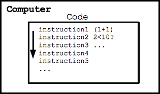
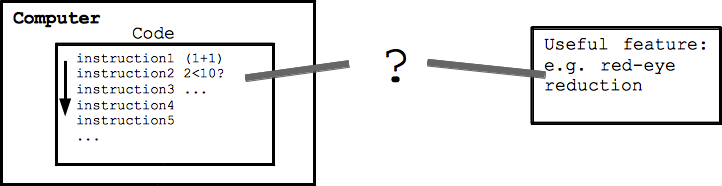
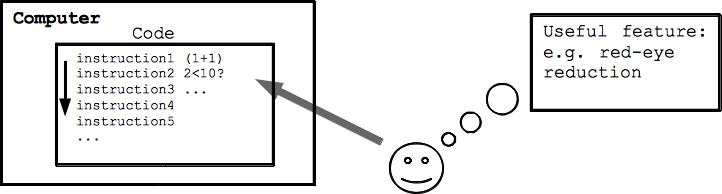

Pre: intimidate by computers, jargon/errors are a wall
Post: see the essential ideas, maybe pique interest
Strategy: use code, but make it easy, show relevance/power
This class explores the essential qualities of computers, how they work, what they can and cannot do, and requires not computer background at all.
In this first section we'll look at the basic features of computers and get started playing with computer code.
Acknowledgement: thanks to Google for supporting my early research that has helped create this class.
Fundamental Equation of Computers
The fundamental equation of computers is:
Computer = Powerful + Stupid
Powerful -- looking through masses of a data
--Billions of "operations" per second
Stupid
--Operations are simple and mechanical
--Lacks "insight"
Powerful + Stupid quality ... see in code experiments
The computer world has this funny, mechanical quality
But computers still are incredibly useful
That's what this class is about
--Visit this funny computer world, see how it works
--Understand what they can do
--Not intimidated, computer is not a magic box
Hidden agenda: too few CS people
--Open your eyes computer world .. some students interested more computer science
Computers are very powerful, looking through large amounts of data quickly. Computers can literally perform billions of operations per second.
However, the individual "operations" that computers can perform are extremely simple and mechanical, nothing like a human thought or insight. A typical operation in the language of computers is adding two numbers together.
So although the computers are fast at what they do, the operations that they can do are extremely rigid, simple, and mechanical. The computer lacks anything like real insight. Or put another way, computers are not like the HAL 9000 from the movie 2001: A Space Odyssey: HAL 9000 youtube clip
If nothing else, you should not be intimidated by the computer as if it's some sort of brain. The computer is a mechanical tool which can do amazing things, but it requires a human to tell it what to do.
First Approximation - How Does a Computer Work?
Computer is driven by "code" (more detail later)
Code is made of simple, mechanical instructions
The computer runs the series of instructions
Computers do not have insight
Machine, following sequence of instructions
Question: if the computer is so mechanical...

But So Many Useful Features
Think of all the useful computer features (phone, camera)
--Email, instant messaging
--MP3 audio
--Red-eye reduction
If computers are so stupid... why are they so useful?
What connects the two sides?

Programmers Make It Happen
Human programmer thinks of a useful feature
--Creativity, insight about problems, computers, ...
Programmer thinks through the solution
Breaking it down, directing the computer
Writing code for the computer
This is what computer programming is
Every useful feature you've ever used has this pattern
Combine the best features of both sides: insight + inexpensive/fast
This diagram as course summary, visit the left side, coding

Since the computer is totally mechanical and stupid -- how do they manage to do so many useful things? The gap between the computer and doing something useful is where the human programmer creates solutions. Programming is about a person using their insight about what would be useful and how it could be done, and breaking the steps down into code the computer can follow.
Code refers to the language the computer can understand. For these lectures, we'll write and run short snippets of code to understand what the essential qualities of computers, and especially their strengths and limitations.
Experimenting with code, the nature of computers will come through very clearly ... powerful in their own way, but with a limited, mechanical quality. IMHO, this mixed nature of computers is something everyone should understand, to use them well, to not be intimidated by them.
Before Coding - Patience
We'll start with some simple coding below
First code examples are not flashy
Code is like lego bricks... eventually make great combinations
But we have to start small
Foreshadowing
Within a few hours of lecture, we'll be doing special effects with images such as the following:
But for now we just have print()!
Patience We're going to start by learning a few programming elements, and later we'll recombine these few elements to solve many problems. These first elements are simple, so they are not much to look at on their own. Be patient, soon we'll put these elements together -- like lego bricks -- to make pretty neat projects.
Javascript
Javascript
Plus some extensions just for this class
Programs are small ... not professional Javascript
These are real programs
For this class, we'll use a variant of the language known as "Javascript", with some added features for this course. The Javascript language works in the web browser, so all of our experiments can live right in the browser with nothing else required. We'll look at just the of Javascript needed for our experiments, not the full language one would see using Javascript professionally. That said, Javascript is a real language and our code is real code. Our small programs show the important features of code, while keeping things fast and small.
1. First Code Example - Print
Here is code which calls the "print" function. Click the Run button below, and your computer will run this code, and the output of the code will appear to the right.
Run executes each line once, running from top to bottom
print is a function -- like a verb in the code
Numbers within the parenthesis ( ... ) are passed in to the print function
Multiple values separated by commas
Experiments change the code and run after each change see the new output:
--Change a number
--Add more numbers separated by commas inside the print(...)
--Copy the first line and paste it in twice after the last line
--I promise the output will get more interesting!
Syntax the code is not free form
--Syntax is narrow, computer can only understand the code in this form
--A reflection of the inner, mechanical nature of the computer
--Don't be put off -- "When in Rome..."
--We're visiting the world of the computer
Note "print" is not a normal part of Javascript, just for this class
2. Print String
Plain numbers, e.g. 6
A string is a sequence of letters written within quotes to be used as data within the code
--e.g. "hello"
--Strings work with the print function, in addition to numbers
--Strings in the computer store text, such as urls or the text of paragraphs, etc.
A comment begins with // and extends through the end of the line. A way to write notes about the code, ignored by the computer.
Experiments: --Edit the text within a string
--Add more strings separated by commas
--Add the string "print" -- inside of string is just data, not treated as code
Note that print is recognized as a function in the code vs. the "hello" string which is just passive data (like verbs and nouns)
The computer ignores the comments, so they are just a way for you to write notes to yourself about what the code is doing. Comments can be use it to temporarily remove a line of code -- "commenting out" the code, by placing a "//" to its
Thinking About Syntax and Errors
Syntax -- code is structured for the computer
Very common error -- type in code, with slight syntax problem
Professional programmers make that sort of "error" all the time
Fortunately, very easy to fix ... don't worry about it
Not a reflection of some author flaw
Just the nature of typing ideas into the mechanical computer language
Demo: a bunch of typical syntax errors + fixing them
Beginners can be derailed by syntax step
Do not be intimidated by these quick little errors
Syntax The syntax shown above must be rigidly followed or the code will not work: function name, parenthesis, each string has opening and closing quotes, commas separating values for a function call.
The rigidity of the syntax is a reflection of the limitations of computers .. their natural language is fixed and mechanical. This is important to absorb when working with computers, and I think this is where many people get derailed getting started with computers. You write something that any human could understand, but the computer can only understand the code where it fits the computer's mechanical syntax.
When writing for the computer, it is very common to make a trivial, superficial syntax mistakes in the code. The most expert programmers on earth make that sort of error all the time, and think nothing of it. The syntax errors do not reflect some flawed strategy by the author. It's just a natural step in translating our thoughts into the more mechanical language of the computer. As we'll see below, fixing these errors is very fast.
It's important to not be derailed by these little superficial-error cases. To help teach you the patterns, below we have many examples showing typical errors, so you can see what the error messages look like and see how to fix them. For each snippet of code below, what is the error? Sometimes the error message generated by the computer points to the problem accurately, but sometimes the error message just reveals that the error has so deeply confused the computer that it cannot create an accurate error message. Firefox currently produces the most helpful error messages often pointing to the specific line with problems.
Syntax Error Examples
These syntax problems are quick to fix.
Example Problem
Change the code below so, when run, it produces the following output:
1 2 buckle
3 4 knock
For the example problems shown in lecture, the solutions are available as shown below. So you can revisit the problem, practice with it, and still see the solution if you like.